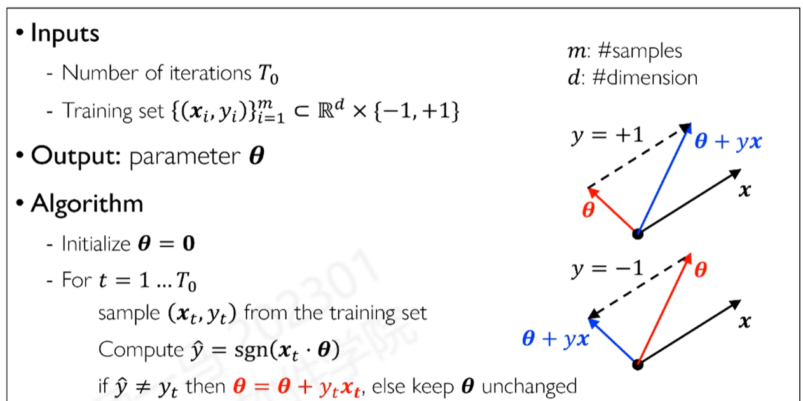
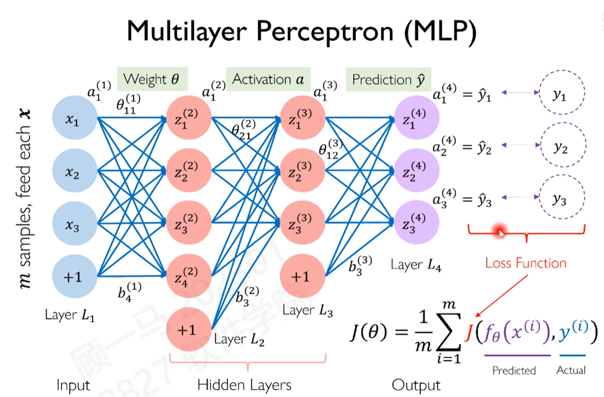
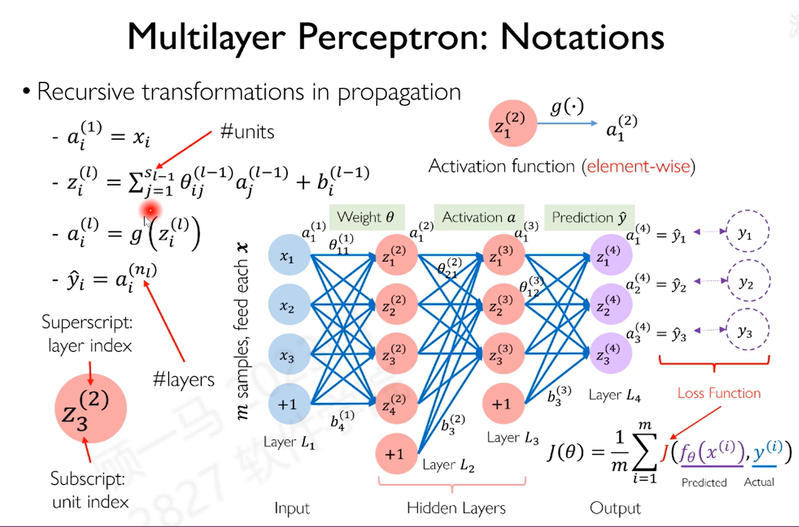
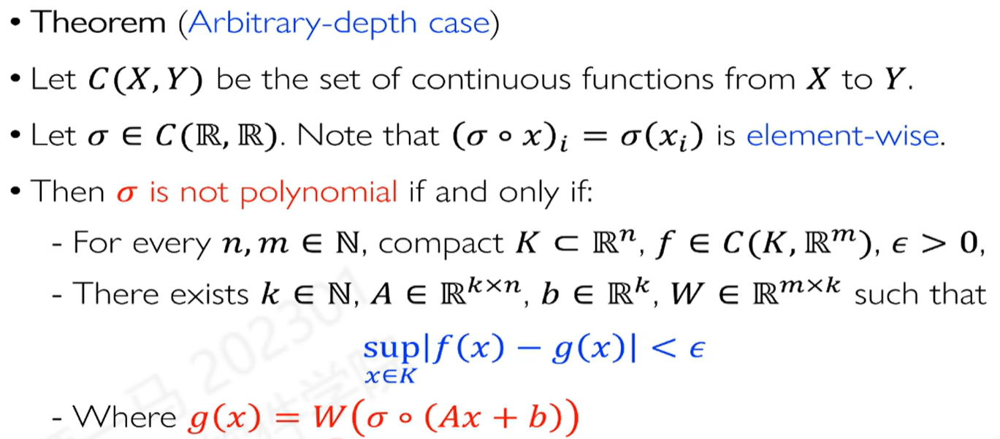
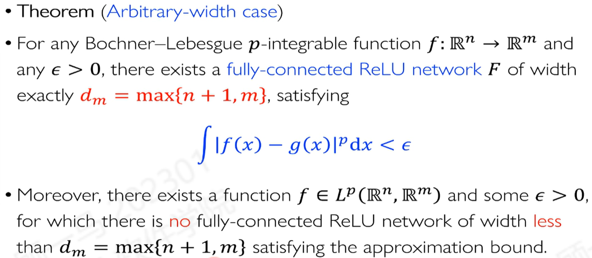

Brain and Neuron
感知机Perceptron是神经元的一个相当简单的数学模型，包括：输入、权重、激活函数、输出。其实是在空间超平面上嵌入了一个非线性函数。
y^=g(i=1∑nxiθi+θ0)
感知机在神经网络中也叫单元unit，是神经网络的基本组成单元。但是这样的单元会比人的神经元简单很多。
PLA
最早的感知机模型使用的是符号函数（Sign Function），作为激活函数。由于该函数是非光滑、不可导的，因此无法应用基于梯度的优化方法（如梯度下降）。为此，研究者们专门设计了一套非梯度的训练算法，即感知机学习算法（PLA）。

在理论推导中，可以计算PLA的收敛率：（在线性可分的情况下）
γ是最优间隔the best-case margin，计算的是训练样本与超平面的距离之间的最小值。
∃v∈Rds.t.γ≤∣∣v∣∣yi(v⋅xi)
R是数据集的半径，即样本数据向量模的最大值，d是数据集的维度。那么PLA的收敛率为： 最多经过γ2R2次迭代就可以收敛。
- γ越大，收敛越快
- R越大，收敛越慢
Expresiveness of Perceptron
感知机是一个线性分类器，只能解决线性可分的问题。如果数据不是线性可分的，那么感知机就无法解决（例如异或问题）。
Multi-layer Perceptron
多层感知机（MLP）是单一感知机的有力扩展，使其能够处理线性不可分问题。其核心结构包括一个输入层、一个或多个隐藏层以及一个输出层。值得一提的是，MLP 的连接方式与人脑的突触连接相比，显得更为简单，通常不是全连接，而是稀疏连接。尽管如此，MLP 依然具备强大的表达能力，通常通过增加隐藏层来提升其处理复杂问题的能力。
Comention


- 用上标表示层数，用下标表示感知机的编号
- θij(l)表示第l层的第i个感知机的第j个输入的权重
- bj(l)表示第l层的第j个感知机的偏置
- aj(l)表示第l层的第j个感知机的输出（在激活之后的数值）
- zj(l)表示第l层的第j个感知机的输入（经过线性变换之后的数值）
- J(θ)表示损失函数Loss Function
在上面的图中，边的个数就是参数的个数。
Activation Function
-
Sigmoid函数：g(z)=σ(z)=1+e−z1
采用有界的函数，可以将输出限制在0-1之间，避免数值爆炸。但是在基于梯度的计算中，会出现梯度消失（梯度饱和），在两侧的范围内梯度会接近于0。
-
ReLU函数：g(z)=max(0,z)
ReLU函数是一个分段函数，可以避免梯度消失的问题。但是在训练时，会出现神经元死亡的问题，即神经元的输出一直为0。
-
GeLu函数：g(z)=z⋅Φ(z)=z⋅21(1+erf(2z))
用Guass分布的累计函数对上述进行加权。Φ(z)是标准正态分布的累计分布函数CDF。在一些较为复杂的模型中（GPT-3、Bert）都有使用。
在网络的输出层，使用的激活函数由问题决定。如果是回归问题，可以使用线性函数；在有界的输出情况下，可以使用Sigmoid函数；在多分类问题中，可以使用Softmax函数。
- Softmax函数：g(z)i=∑j=1kezjezi
Softmax函数是一个多分类的激活函数，可以将输出的值转化为概率值。分类问题是随机实验中的伯努利实验Categorical Distribution。
缺点为：“赢者通吃”，即最大的值会被放大，其他的值会被压缩，有over confidence的问题（即某个分类的概率过大）。同时有数值稳定性问题，即数值计算时可能会出现数值爆炸的问题。
改进为：
g(z)i=∑j=1kezj−max(z)ezi−max(z)
上述改进能解决数值稳定性问题，但是对于over confidence问题还是存在。 ^b5bcbb
Cost Function
任何一个衡量预测与实际值之间的差异的函数都可以称为损失函数。在这里使用的是交叉熵损失函数Cross Entropy Loss：
J(y,y^)=−i=1∑nyilog(y^i)
作代入得到：
J(θ)=−m1i=1∑mj=1∑k1{y(i)=j}log∑j′=1kexpzj′(nl)expzj(nl)(∗)
*上述公式中的m为样本数目，k为类别数目，zj(nl)为最后一层的第j个感知机的输入。对于实际类别采用独热编码，即只有在对应类别取值为1。
Statistical View of Softmax
考虑投掷m次骰子，其中第i个得到j的概率为qij。在Softmax中对于概率进行建模（用数据进行估计，对于分类估计的参数进行逼近）：
qij=P(yi=j∣xi;W)
在给定的结果{y1,...,ym}下，概率值（似然函数）为：
L(W;D)=i=1∏mj=1∏kP(yi=j∣qij)1{yi=j}=i=1∏mj=1∏kP(yi=j∣xi;W)1{yi=j}
W是模型的参数，上面的式子是在这样的建模和数据下得到结果的可能性，也就是统计中的似然函数。这样的过程类似于统计中的参数估计。
做极大似然估计：
L(W;D)=w1…wkmaxi=1∏mj=1∏kP(yi=j∣xi;W)1{yi=j}
取负对数：
J(W)=w1…wkmin−logL(W;D)=−i=1∑mj=1∑k1{yi=j}logP(yi=j∣xi;W)
上述的式子就是交叉熵损失函数。上面的过程其实是在认为分类是i.i.d.的伯努利分布的极大似然估计。
从统计学角度看，最小化交叉熵损失函数等价于最大化分类结果服从多项分布时的对数似然。这为我们常用的损失函数提供了坚实的理论依据。
Gradient Descent
对于不是直接依赖的导数的计算较为复杂，对于最后一层的导数计算较为简单（是直接依赖）。对于前面层的参数的导数在这里使用链式法则来进行计算。
对于最后一层的参数的导数计算：
∂zj(nl)∂J(θ,b)=−(1{y(i)=j}−P(y(i)=j∣x(i);θ,b)))
可以发现梯度是真是的概率减去预测的概率。
Step 1: Forward Propagation
输入样本计算得到的输出值，这个过程是一个前向传播的过程。
Step 2: Backward Propagation
将损失函数带有的错误信息向前传播
θ1J(θ)=∂y^∂J(θ)∂z∂y^∂θ1∂z
除了需要求解的导数的参数，其他的都是计算的中间值。BP是一个动态规划算法。
Computing the Residual
第l层的第i个结点的残差Residual的定义为：
δi(l)=∂zi(l)∂J(θ)
对于最后一层的残差，计算较为简单：
δi(nl)=∂zi(nl)∂J(θ)=∂y^i∂J(θ)g′(zi(nl))
利用链式法则对激活函数求导即可。
对于隐藏层的导数计算：
δi(l)=∂zi(l)∂J(θ)=j=1∑nl+1∂zj(l+1)∂J(θ)∂zi(l)∂zj(l+1)=j=1∑nl+1δj(l+1)θij(l)g′(zi(l))
δi(l)=j=1∑nl+1δj(l+1)θji(l)g′(zj(l))
上述公式实现了传递的过程。
Step 3: Update Parameters
对于参数更新的过程：
∂θij(l)∂J(θ)=∂zj(l+1)∂J(θ)∂θij(l)∂zj(l+1)=δj(l+1)ai(l)
∂bj(l)∂J(θ)=δj(l+1)
Automatic Differentiation
在实际的计算中，可以使用自动微分的方法来进行计算。自动微分是一种计算导数的方法，可以分为两种：
- Symbolic Differentiation：通过符号的方式来计算导数，这种方法计算的精确度较高，但是计算的速度较慢。
- Numerical Differentiation：通过数值的方式来计算导数，这种方法计算的速度较快，但是计算的精确度较低。
在计算图中，将每一个计算层的反向传播的导数保存在软件包中，这样可以减少计算的时间。实际的应用中，对于计算图进行拓扑排序，然后进行反向传播的计算。
Optimization in Practice
Dropout
在训练的过程中，随机的将一些神经元的权重置为0（丢弃），这样可以减少过拟合的问题。在操作的过程中，按照一定的概率p对神经元进行丢弃。在某一层未被丢弃的神经元的激活值值乘以1−p1，这样可以保持期望值不变。
Weight Initialization
对于权重的初始化，一般使用Guass分布可以使用一些方法来进行初始化，例如：
Xavier Initialization ( linear activations )：
Var(W)=nin1
假设输入的数据xj满足均值为0，方差为γ，nin是这一个神经元对应的输入的神经元的个数。
在线性组合之后，可以得到：
hi=j=1∑ninwijxj
可以认为wij是独立同分布的并且均值为0方差为σ2那么计算得到：
E[hi]=0E[hi2]=ninσ2γ
这样在经过一个层之后数据的方差会改变，为了保持方差不变，可以使用上述的初始化方法。
He Initialization：(ReLU activations)
Var(W)=nin2
其中nin是这一个神经元对应的输入的神经元的个数。
Baby Sitting Learning
在训练的过程中，首先在较小的数据集上进行过拟和（在这个训练集上的损失函数接近0）
学习率
- 如果训练过程中损失函数停滞不前甚至变大，很可能是学习率过高，导致模型参数在最优解附近震荡或发散。这时应适当减小学习率。
- 相反，如果学习率过低，模型参数更新会非常缓慢，导致训练过程效率低下。这时可以尝试增大学习率来加速训练。
数值爆炸：
- 为了避免神经元进入饱和区（梯度接近于零，导致更新停滞），可以采用合适的权重初始化方法来缓解。
- 对输入数据进行归一化处理，可以有效地防止数值爆炸问题。
当验证损失与训练损失之间存在较大差距时，通常表明模型出现了过拟合。这意味着模型在训练集上表现良好，但在未见过的新数据（验证集）上表现不佳。
为了解决这个问题，可以采用早停策略。即在训练过程中，当验证损失不再下降，反而开始上升时，就停止训练。这能让模型在验证误差曲线趋近渐近线时达到最佳性能，从而防止过拟合。
Batch Normalization
其核心目标是解决一个问题：在深度神经网络中，数据经过一层又一层的变换，每一层接收到的输入的分布都在剧烈变化，这使得训练变得困难、缓慢且不稳定。归一化层就是用来稳定和规范化每一层输入的“中间件”，从而让整个训练过程更顺畅。
对于输入的数据进行归一化处理，可以加快训练的速度，同时可以减少梯度消失的问题。在训练的过程中，对于每一个batch的数据进行归一化处理，可以使得数据的分布更加稳定。其中μ和σ是对于每一个mini-batch的均值和方差。
x^=σx−μ
这是一个非参数化方法。可以加入可学习的参数.这相当于给了网络一个“反悔”的机会。如果网络发现原始的、未被归一化的特征分布就是最优的，它可以通过学习让γ等于原始标准差σ，β等于原始均值μ，从而将数据恢复回去。：
y=γx^+β
在CNN中，对每一个batch中的n个w×h的特征图进行归一化处理，可以使得数据的分布更加稳定。
上述是在训练的过程中使用的，在测试过程中使用不了称为训练推理失配train inference mismatch。可以使用EMA（指数滑动平均）的方法来进行替代。
上述要求n大概是16，在比较大的模型中，可能显存不够。上述方法有一个替代的方法Layer Normalization，对于每一个样本进行归一化处理。
在使用了Batch Normalization之后，仍然有协变量偏移covariate shift的问题。但是在使用Batch Normalization之后，Lipchitz系数变化更加平稳，海森矩阵也更加稳定。上述可以用数学严格证明。上述操作并不是简单的归一化，而是使得表示的函数族更加光滑，一个光滑的、凸的函数更容易优化。
∇yjL^2≤σj2γ2(∇yj2−m1(1,∇yjL)2−m1(∇yjL,y^j)2)
γ<σ in experiments
(∇yjL^)T∂yj∂yj∂L^(∇yjL^)≤σj2γ2((∇yjL)T∂yj∂yj∂L(∇yjL)−mσ2γ(∇yjL,y^j)∇yjL^2)
Group Normalization

在Group Normalization中，对于每一个通道的特征图进行归一化处理，这样可以减少计算的复杂度。是轻量化CNN的方法。在一定数据量较大的情况下可以达到和Batch Normalization差不多的结果。因此，GN非常适用于那些因为模型太大或图片太大而只能使用小batch size的场景，比如目标检测、实例分割和视频理解等。
Generalization and Capacity
- CNN之所以能用更少的参数达到和FCN（全连接网络）相当甚至更好的效果，是因为它的结构（局部连接、权值共享）非常适合处理图像数据，这是一种“聪明”的设计，用更高效的方式利用了模型容量。这说明容量不只与参数数量有关，还与参数的组织方式有关。
- 在结构固定的情况下，增加参数量通常会提升模型的容量，使其能够拟合更复杂的数据模式，因此在训练数据上表现更好。但这也会增加过拟合的风险，即模型可能会“死记硬背”训练数据而丧失了泛化到新数据的能力。
Theorem (Arbitrarily large neural networks can approximate any function)
理论可以表述为：对于任意的连续函数，存在一个足够大的神经网络可以近似这个函数。

上面表示两层神经网络可以逼近任意的连续函数，要求这个函数σ不是多项式函数。

上面的定理表示神经网络的宽度也很重要，可以通过增加神经元的数量来逼近函数。
在空间折叠的问题中，表明深度比宽度更加重要。